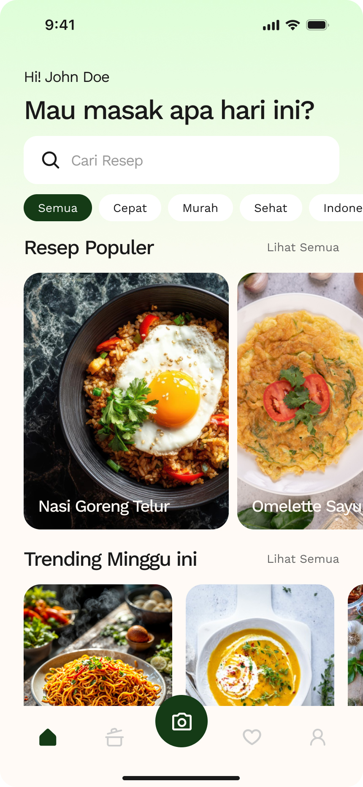

Catat isi kulkas Anda dan temukan rekomendasi resep masakan yang pas dalam hitungan detik. Tanpa repot, tanpa pusing.

Aplikasi pendamping dapur Anda yang sederhana dan fungsional.
Catat dan pantau semua bahan makanan yang Anda miliki di rumah secara rapi.
Dapatkan rekomendasi resep yang 100% cocok dengan bahan-bahan di kulkas Anda.
Simpan resep favorit Anda ke dalam koleksi agar mudah diakses kapan saja.
Jadikan pengalaman di dapur lebih menyenangkan dan terorganisir bersama CookSnap.